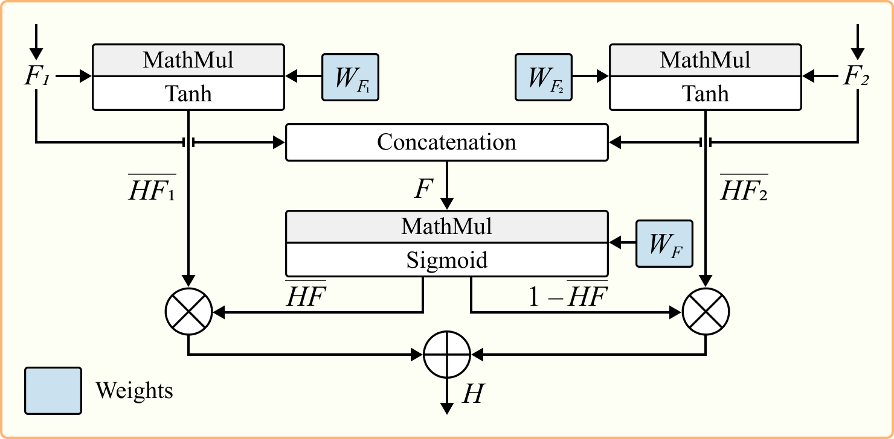

TODO List
Abstract
Automatic emotion recognition methods are critical to human-computer interaction. However, current methods suffer from limited applicability due to their tendency to overfit on single-corpus datasets. This overfitting reduces real-world effectiveness of the methods when faced with new unseen corpora. We propose the first multi-corpus multimodal emotion recognition method with high generalizability evaluated through a leave-one-corpus-out protocol. The method uses three fine-tuned encoders per modality (audio, video, and text) and a decoder employing context-independent gated attention to combine features from all three modalities. The research is conducted on four benchmark corpora: MOSEI, MELD, IEMOCAP, and AFEW. The proposed method achieves the state-of-the-art results on the corpora and establishes the first baselines for multi-corpus studies. We demonstrate that due to the MELD rich emotional expressiveness across three modalities, the models trained on it exhibit the best generalization ability when applied to corpora used. We also reveal that the AFEW annotation better correlates with the annotations of MOSEI, MELD, IEMOCAP and shows the best cross-corpus performance as it is consistent with the widely-accepted concepts of basic emotions.
Pipeline of the proposed multimodal ER method

Gated feature layer (GFL) architecture
The statistics of research corpora. Acc refers to Accuracy, wAcc to Weighted Accuracy, F1 to F1-score, UAR to Unweighted Average Recall.
| Corpus | Dur., h | Dur. range, sec (Min / Max / Mean) | Train | Val. | Test | Classes of emotions | Class imbalance (Mean / STD) | Evaluation measures |
|---|---|---|---|---|---|---|---|---|
| IEMOCAP | 9:24 | 0.6 / 34.1 / 4.6 | 5229 | 581 | 1623 | 6 | 959.7 / 344.4 | Acc / F1 / UAR |
| MOSEI | 45:51 | 0.2 / 108.9 / 7.2 | 16216 | 1835 | 4625 | 6 | 3734.3 / 2441.1 | Acc / wAcc / F1 / UAR |
| MELD | 12:4 | 0.2 / 304.9 / 3.2 | 9989 | 1109 | 2610 | 7 | 1426.9 / 1427.0 | Acc / F1 / UAR |
| AFEW | 0:48 | 0.5 / 6.3 / 2.5 | 773 | 383 | -- | 7 | 110.4 / 31.1 | Acc / F1 / UAR |
Results (Recall, %) of two setups of single-corpus ablation based on single-corpus models trained with the weighted loss. A, V and T refer to audio, video and text modalities, respectively. ↓ and ↑ show the most and least informative modalities compared to the three-modal model performance.
| Modality | Neutral | Happy | Sad | Angry | Excited | Frustrated | UAR | |
|---|---|---|---|---|---|---|---|---|
| IEMOCAP | ||||||||
| A+V+T | 76.6 | 51.7 | 78.0 | 78.8 | 75.3 | 69.6 | 71.6 | |
| Setup 1. Modality feature nullification | ||||||||
| w/o A | 69.5 | 42.7 | 74.3 | 60.0 ↓ | 72.6 | 68.5 | 64.6 | |
| w/o V | 57.0 ↓ | 58.0 ↑ | 69.0 | 72.4 | 51.5 ↓ | 77.4 ↑ | 64.2 | |
| w/o T | 82.8 ↑ | 14.7 ↓ | 66.1 ↓ | 77.6 | 72.9 | 3.4 ↓ | 52.9 ↓ | |
| Setup 2. Modality exclusion | ||||||||
| w/o A | 69.3 | 50.3 | 77.1 | 74.1 | 70.2 | 66.1 | 67.9 | |
| w/o V | 66.9 ↓ | 48.3 ↓ | 73.9 ↓ | 75.9 | 65.6 | 66.7 | 66.2 | |
| w/o T | 71.9 | 64.3 ↑ | 85.7 ↑ | 56.5 ↓ | 62.2 ↓ | 54.9 ↓ | 65.9 ↓ | |
| Modality | Neutral | Happy / Joy | Sad | Angry | Surprise | Fear | Disgust | UAR |
| MOSEI | ||||||||
| A+V+T | -- | 77.4 | 57.3 | 56.9 | 48.4 | 54.0 | 68.9 | 60.5 |
| Setup 1. Modality feature nullification | ||||||||
| w/o A | -- | 72.8 | 52.7 ↓ | 69.7 ↑ | 44.3 ↓ | 52.2 | 68.1 | 60.0 |
| w/o V | -- | 71.6 ↓ | 53.2 | 55.7 | 50.7 ↑ | 51.7 | 72.5 ↑ | 59.2 |
| w/o T | -- | 72.2 | 62.9 ↑ | 45.8 ↓ | 45.0 | 49.9 ↓ | 56.3 ↓ | 55.4 ↓ |
| Setup 2. Modality exclusion | ||||||||
| w/o A | -- | 75.1 | 63.1 ↑ | 60.3 ↑ | 55.2 ↑ | 65.7 ↑ | 68.8 | 64.7 ↑ |
| w/o V | -- | 70.0 ↓ | 58.8 ↑ | 52.8 ↓ | 44.1 ↓ | 57.1 ↑ | 63.2 | 57.7 |
| w/o T | -- | 73.7 | 60.4 ↑ | 56.4 | 49.8 ↑ | 44.2 ↓ | 60.7 ↓ | 57.5 ↓ |
| Modality | Neutral | Happy | Sad | Angry | Surprise | Fear | Disgust | UAR |
| MELD | ||||||||
| A+V+T | 68.7 | 65.9 | 53.8 | 59.7 | 69.0 | 44.0 | 42.6 | 57.7 |
| Setup 1. Modality feature nullification | ||||||||
| w/o A | 64.1 | 67.4 ↑ | 52.4 | 48.7 | 71.5 ↑ | 40.0 | 30.9 ↓ | 53.6 |
| w/o V | 58.2 | 65.9 | 59.1 ↑ | 38.6 ↓ | 70.5 ↑ | 40.0 | 35.3 | 52.5 |
| w/o T | 37.9 ↓ | 2.7 ↓ | 10.6 ↓ | 84.9 ↑ | 1.1 ↓ | 20.0 ↓ | 41.2 | 28.3 ↓ |
| Setup 2. Modality exclusion | ||||||||
| w/o A | 67.6 | 64.9 | 44.7 | 49.9 | 66.5 | 32.0 | 42.6 | 52.6 |
| w/o V | 66.9 | 37.8 ↓ | 43.3 ↓ | 54.2 | 49.8 | 20.0 | 25.0 | 42.4 |
| w/o T | 31.8 ↓ | 43.3 | 55.3 ↑ | 46.4 ↓ | 13.9 ↓ | 16.0 ↓ | 23.5 ↓ | 32.9 ↓ |
| Modality | Neutral | Happy | Sad | Angry | Surprise | Fear | Disgust | UAR |
| AFEW | ||||||||
| A+V+T | 84.1 | 88.7 | 74.2 | 70.3 | 48.9 | 60.9 | 53.7 | 68.7 |
| Setup 1. Modality feature nullification | ||||||||
| w/o A | 76.2 | 90.3 ↑ | 53.2 | 43.8 ↓ | 51.1 ↑ | 54.3 | 46.3 | 59.3 |
| w/o V | 49.2 ↓ | 40.3 ↓ | 35.5 ↓ | 54.7 | 26.7 ↓ | 50.0 | 29.3 ↓ | 40.8 ↓ |
| w/o T | 60.3 | 74.4 | 75.8 ↑ | 75.0 ↑ | 42.2 | 32.6 ↓ | 34.1 | 56.8 |
| Setup 2. Modality exclusion | ||||||||
| w/o A | 68.3 | 61.3 | 41.9 ↓ | 50.0 ↓ | 53.3 ↑ | 45.7 | 51.2 | 53.1 |
| w/o V | 60.3 ↓ | 37.1 ↓ | 41.9 ↓ | 70.3 | 20.0 ↓ | 43.5 ↓ | 14.6 ↓ | 41.1 ↓ |
| w/o T | 69.8 | 79.0 | 74.2 | 70.3 | 62.2 ↑ | 43.5 ↓ | 43.9 | 63.3 |
Multi-corpus experimental results (UAR, %) based on single-corpus trained models. Δ means difference between diagonal and average values
| Training corpus | Test subset | Average | |||
|---|---|---|---|---|---|
| IEMOCAP | MOSEI | MELD | AFEW | ||
| IEMOCAP | 71.3 | 15.5 | 22.9 | 34.1 | 24.7 |
| MOSEI | 38.2 | 38.5 | 34.3 | 44.3 | 38.9 |
| MELD | 42.3 | 30.4 | 62.0 | 42.1 | 38.3 |
| AFEW | 47.3 | 28.4 | 33.3 | 79.3 | 37.6 |
| Average | 42.6 (Δ 28.7) | 24.8 (Δ 13.7) | 30.2 (Δ 31.8) | 40.2 (Δ 39.1) | — |
Results (UAR, %) based on multi-corpus trained models and different encoders. Without corpus (e.g. w/o MELD) performance is for Test subsets of all training corpora, excluding MELD. ↓ shows the least generalization ability.
| Encoder | Test subset | |||||||
|---|---|---|---|---|---|---|---|---|
| W/o IEMOCAP | LOCO IEMOCAP | W/o MOSEI | LOCO MOSEI | W/o MELD | LOCO MELD | W/o AFEW | LOCO AFEW | |
| IEMOCAP | -- | -- | 59.7 | 31.7 | 49.6 | 32.8 | 50.7 | 42.9 ↓ |
| MOSEI | 43.0 ↓ | 44.5 | -- | -- | 43.2 ↓ | 33.0 | 49.4 | 48.6 |
| MELD | 50.1 | 44.4 | 59.9 | 31.6 | -- | -- | 53.1 | 49.0 |
| AFEW | 48.2 | 44.1 | 59.8 | 28.5 ↓ | 52.3 | 32.2 | -- | -- |
| Average | 47.1 | 44.3 | 59.8 | 30.6 | 48.4 | 32.7 | 51.1 | 46.8 |
Comparison with existing MER methods. wF1 refers to weighted F1, mF1 to macro F1, WL to models trained with the weighted loss.
| Method | Year | Corpus | Modality | wAcc | wF1 | Acc | F1 |
|---|---|---|---|---|---|---|---|
| Le et al. | 2023 | MOSEI | A+V+T | 67.8 | -- | -- | 47.6 |
| MAGDRA | 2024 | -- | -- | 48.8 | 56.3 | ||
| TAILOR | 2022 | -- | -- | 48.8 | 56.9 | ||
| CARAT | 2024 | 66.4 | 78.8 | 49.4 | 58.1 | ||
| Ours (w/o WL) | 2024 | 61.4 | 80.4 | 49.7 | 54.0 | ||
| Ours (WL) | 2024 | 69.3 | 77.7 | 46.2 | 53.4 | ||
| Method | Year | Corpus | Modality | Acc | wF1 | mF1 | UAR |
| TelME | 2024 | IEMOCAP | A+V+T | -- | 70.5 | -- | 68.6 |
| CORECT | 2023 | 69.9 | 70.0 | -- | 70.9 | ||
| Yao et al. | 2024 | 71.2 | 71.2 | -- | -- | ||
| M³Net | 2023 | 72.5 | 72.5 | 71.5 | -- | ||
| Ours (w/o WL) | 2024 | 71.9 | 71.7 | 70.5 | 70.2 | ||
| Ours (WL) | 2024 | 72.9 | 72.8 | 72.0 | 71.6 | ||
| SDT | 2023 | MELD | A+V+T | 66.6 | 67.5 | 49.8 | 48.0 |
| M³Net | 2023 | 68.3 | 67.1 | 51.0 | -- | ||
| TelME | 2024 | -- | 67.4 | 51.4 | 50.0 | ||
| Yao et al. | 2024 | 67.0 | 66.2 | -- | -- | ||
| Ours (w/o WL) | 2024 | 68.8 | 67.7 | 50.8 | 48.8 | ||
| Ours (WL) | 2024 | 64.8 | 65.7 | 54.5 | 57.7 | ||
| Nguyen et al. | 2019 | AFEW | A+V | 62.3 | -- | -- | -- |
| Zhou et al. | 2019 | 65.5 | -- | -- | -- | ||
| Abdrahimov et al. | 2022 | 67.8 | -- | -- | 62.0 | ||
| Ours (w/o WL) | 2024 | A+V+T | 70.2 | 69.6 | 67.2 | 67.3 | |
| Ours (WL) | 2024 | 70.8 | 70.5 | 68.7 | 68.7 |
Conclusion
In this paper, we first propose the multi-corpus MER method designed to exhibit high generalizability to new unseen data. Our method incorporates three red encoders to extract features from audio, video, and text modalities. To capture the context of audio and video signals, our method extracts statistic information from both modalities, enabling context-independent analysis of signals. The gated attention mechanism efficiently fuses information from all three modalities. The method has been evaluated on IEMOCAP, MOSEI, MELD, and AFEW in both single- and multi-corpus setups. The new baselines have been obtained on all four corpora. Despite the results obtained, our method, developed through multi-corpus learning and cross-corpus testing, does not reach the performance levels of models trained on a single corpus. Our findings suggest that this difference may be due to overfitting of single-corpus models to the training corpus. Additionally, the cross-corpus setup faces challenges such as discrepancies in emotional expressiveness between corpora and inconsistencies in their annotations. These two challenges should become the focus of further research.